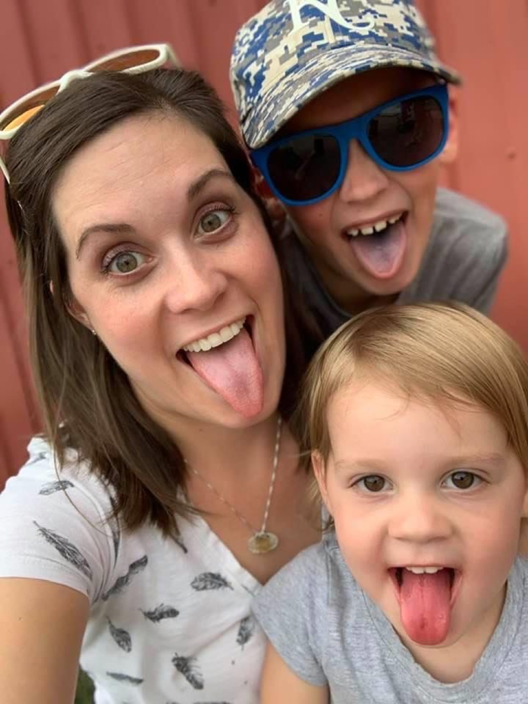

OMT helps at every stage of life
From nursing infants to grandparents, orofacial myofunctional therapy meets patients wherever they are — and the whole family often benefits along the way.

Infants & toddlers
Self-referred, or referred by a pediatrician, lactation consultant, or ENT
Children & teens
Self-referred, or referred by a dentist, orthodontist, or pediatrician
Adults
Self-referred, or referred by an orthodontist, ENT, or sleep physician
Kathleen welcomes referrals
She works as part of a collaborative team with orthodontists, pediatric dentists, ENTs, allergists, functional airway specialists, sleep physicians, speech-language pathologists, chiropractors, TMJ specialists, physical therapists, doulas, and lactation consultants — communicating findings and coordinating care. Patients are also welcome to self-refer.
Orthodontists & dentists
OMT is essential for stable orthodontic outcomes. Kathleen addresses the muscle imbalances that cause relapse, and provides pre- and post-treatment muscle re-education.
ENTs & allergists
Kathleen collaborates on airway and breathing concerns, providing nasal breathing strategies and complementary muscle work that supports surgical or medical interventions.
Speech-language pathologists
OMT addresses the underlying muscle tone and posture issues that affect articulation — complementing speech therapy for lasting results.
Sleep physicians
Orofacial myofunctional therapy is an evidence-based component of sleep-disordered breathing treatment, including mild-to-moderate OSA management.